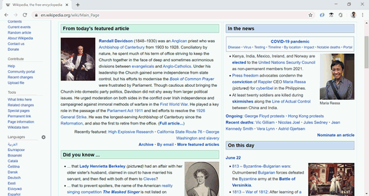

CSS селектори¶
CSS селектори су део CSS правила који дефинишу на које елементе треба применити скуп CSS својстава. Селектори се користе у дефиницијама CSS стилова као што је приказано у следећем примеру:
селектор елемената {
скуп низ дефиниција стилова
}
Прегледач који наиђе на ово правило ће наћи све HTML елементе у документу описане селектором и на њих применити скуп дефиниција стилова наведен у витичастим заградама.
У досадашњим примерима смо као селектор користили име HTML елемента (на пример p, h1, h2) и тиме означавали да је наведена правила потребно применити на све такве HTML елементе. Међутим, CSS нам даје много више могућности да прецизније опишемо на које елементе треба применити правила и стилове. На пример, можемо да дефинишемо CSS правила која ће бити примењена на један елемент са задатом вредношћу идентификатора или на класу елемената различитих типова.
Стилизовање елемента по идентификатору¶
Ако желите да примените стилове само на један одређени елемент, а не на све елементе неког типа, онда том елементу ставите неку вредност у атрибут id, па примените стилове само на тај елемент тако што поставите знак # испред коришћеног идентификатора. Претпоставимо да имамо елемент са идентификатором biografija и да желимо да дефинишемо стилове само за њега. То бисмо постигли следећим правилом:
#biografija {
border: 15px solid green;
font-size: 20px;
}
Уместо да као селектор користимо име (тип) HTML елемента, чиме би правило било примењено на све елементе тог типа, употребом идентификатора biografija правило примењујемо само на елемент са тим идентификатором.
Стилизовање класа елемената¶
Овакво стилизовање се користи у случају да је потребно применити исти стил на више елемената различитих типова (нпр. желимо да користимо исту врсту, боју и величину слова у неким параграфима, листама и табелама), или је потребно применити стил на само неке елементе датог типа (нпр. на само неке параграфе). Као пример се могу посматрати наслови у веб страни Википедије за изабране вести. У зависности од позиције артикла (лева или десна колона), наслови и пасуси имају зелену или плаву позадину.
{kind=link}
HTML елементи на левој и десној страни су истог типа, тако да је потребно некако означити да елементи из леве групе треба да буду приказани другачије од елемената у десној групи. У овом случају је потребно да одаберемо неко име за сваку групу елемената и да у селектор ставимо име те групе са тачком испред имена. Претпоставимо да елементи на левој, односно десној страни треба да имају следећа својства:
.levo {
background-color: green;
}
.desno {
background-color: blue;
}
Када се дефинишу овакви стилови, потребно је у HTML коду пронаћи сваки елемент који се приказује са леве стране и поставити му атрибут class="levo" ако атрибут class не постоји, или додати име групе levo у постојећи атрибут. За елементе на десној страни треба урадити исто, осим што ће име групе за ове елементе бити desno:
<h2 class="levo">Наслов првог пасуса са леве стране</h2>
<p class="levo naslovna">Садржај првог пасуса са леве стране</p>
<h2 class="levo">Наслов другог пасуса са леве стране</h2>
<p class="levo">Садржај другог пасуса са леве стране</p>
<h2 class="desno">Наслов првог пасуса са десне стране</h2>
<p class="naslovna desno">Садржај првог пасуса са десне стране</p>
Ова имена група се постављају у оквиру атрибута class и због тога се називају класе. Атрибут class може да садржи једно или више имена класа, на основу којих ће његовом елементу бити постављена својства.
Селекторе класа користимо када постоји више елемената на страни (или различитим странама), који треба да изгледају исто. У том случају треба на једном месту дефинисати стил који се односи на класу елемената и ту класу додамо свим елементима које желимо да стилизујемо на тај начин.
Стил који се поставља елементу са више класа је унија стилова дефинисаних у различитим класама. У случају да више класа дефинише различите вредности истих CSS својстава (нпр. ако и класа levo и класа naslovna поставе својство боје текста, али на различите вредности), прегледач ће разрешити конфликте. Правила разрешавања могу да буду компликована, тако да у дизајну треба настојати да до оваквих конфликата не долази.
Сложени селектори¶
Селектори елемената, идентификатора и класа се могу међусобно комбиновати. Постоје два најчешћа начина за комбиновање селектора:
Спoјени селектори означавају да се стил примењује на елементе који непосредно испуњавају оба услова. У следећем примеру, правила уз селектор
p.levoсе примењују на све<p>елементе у чијем атрибутуclassпостоји и вредностlevo(на примерclass="levo"илиclass="poslednji levo"), док се правила уз селектор.poslednji.levoпримењују на све елементе у чијем атрибутуclassпостоје вредностиlevoиposlednji(на примерclass="levo poslednji istaknut"илиclass="poslednji levo"):
p.levo {
background-color: green;
font-size: 20px;
}
.poslednji.levo {
background-color: black;
color: green;
}
Селектори раздвојени размаком означавају да се стил примењује на елементе који испуњавају други услов, а наслеђују први. На пример, погледајмо следећу дефиницију стила:
.levo p {
background-color: green;
font-size: 20px;
}
Ови стилови ће се применити на сваки елемент <p> који се налази унутар било ког елемента који има класу class="levo":
<div class=”levo”>
<h2>Наслов првог пасуса са леве стране</h2>
<p class=”naslovna”>Садржај првог пасуса са леве стране</p>
<h2>Наслов другог пасуса са леве стране</h2>
<p>Садржај другог пасуса са леве стране</p>
</div>
Елемент div који је овде коришћен биће детаљније објашњен у следећој лекцији. Овде је његова улога само да садржи друге елементе и омогући припадност свих груписаних елемената класи levo. На овај начин не морамо да постављамо класу levo на сваки пасус са леве стране, него може да се стави класа на један елемент који окружује и садржи све елементе са леве стране.
Напомињемо да елемент <p> не мора да буде непосредно унутар елемента који има класу class=”levo”, него се може наћи на произвољном месту и на произвољној дубини унутар таквог елемента.
Ово су само неки од основних начина које можете да користите како бисте дефинисали на које елементе треба применити стил. Више информација о селекторима и начинима на који се могу комбиновати можете наћи на веб страни W3CSchools - селектори.